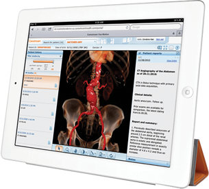

Sistema vue pacs
carestream
DESCRIPCIÓN:
“Escalable y flexible, es la solución rentable para mejorar el flujo de trabajo, la productividad y la atención al paciente”.
El nuevo VUE PACS CARESTREAM provee un acceso rápido y fácil a las imágenes y reportes, y está diseñado para ajustarse a las necesidades de prácticamente cualquier tamaño de institución.
El sistema integrado Web PACS permite a los médicos referentes y radiólogos, así como a otras instituciones autorizadas, visualizar las imágenes y la información en sus propias instalaciones o desde sitios remotos, dónde y cuándo se requiera.
Como una forma flexible y rentable para mejorar el flujo de trabajo, la productividad y la atención al paciente, el SISTEMA VUE PACS está listo para integrarse con sistemas HIS/RIS, modalidades, equipos generadores de imagen y su infraestructura actual, ya sea de uno o múltiples sitios.
Estación de diagnóstico carestream
“Poderosa estación de trabajo para la interpretación y el diagnóstico”.
DESCRIPCIÓN:
Diseñada para el diagnóstico en áreas de alto volumen, la estación de trabajo CARESTREAM DIRECTVIEW DIAGNOSTIC WORKSTATION permite diferentes configuraciones de visualización estándar y de alta resolución que ayudan a garantizar la total confianza en el diagnóstico.
Está equipada con funciones de última tecnología que proporcionan un acceso rápido y sencillo, además de eficiente, a toda una gama de herramientas de revisión de imágenes, análisis y manipulación, así como opciones que integran el procesamiento en 3D y el reconocimiento de voz.
Carestream web software
“La pieza clave para la distribución de imágenes e información en el CARESTREAM DIRECTVIEW PACS”.
DESCRIPCIÓN:
Este módulo de acceso basado en tecnología Web, funciona a través de Internet independientemente de la plataforma utilizada, permitiendo la distribución de imágenes e informes. No requiere la instalación de ninguna aplicación de software en la computadora que realiza el acceso y permite utilizar el explorador de Internet de su preferencia. Aparte de transmitir en compresión sin pérdida, se puede seleccionar compresión con pérdida (wavelet progresivo), para minimizar los tiempos de espera en conexiones de baja velocidad.
Carestream distribution suite
DESCRIPCIÓN:
Cd direct system: Crea CDs autoejectuables con los estudios de imágenes e informes radiológicos para su distribución a médicos referentes o pacientes y puede leerse desde cualquier computadora PC o Mac. En la carátula del CD se puede imprimir el logotipo de la institución.
“Herramientas para facilitar la distribución de imágenes e información”. Está integrado por una serie de herramientas que sirven de ayuda para distribuir de modo rápido y práctico imágenes e informes, lo que contribuye a aumentar la colaboración con los médicos referentes.
E-mail module: envía automáticamente el informe y las imágenes relevantes a los médicos referentes a través de mensajes de correo electrónico encriptados. Un vínculo (link) opcional permite acceder a todo el estudio con un solo clic.
Carestream is link
“Integra el CARESTREAM VUE PACS con sistemas HIS/RIS”.
DESCRIPCIÓN:
La interfase altamente configurable para HL-7 DIRECTVIEW IS LINK integra el CARESTREAM VUE PACS con los sistemas HIS/RIS para proporcionar acceso eficiente a la información e informes de los pacientes desde cualquier punto del hospital, clínica, departamento de imagen y en general de sitios remotos conectados a la institución. El IS LINK permite que los cambios realizados por el sistema HIS/RIS se actualicen automáticamente.
Carestream enterprise information management
“Almacenamiento a largo plazo”.
DESCRIPCIÓN:
Administra de forma automática y transparente las soluciones de almacenamiento intermedio y fuera de línea, y provee opciones de almacenamiento escalables para cubrir sus necesidades. Sus posibilidades de crecimiento garantizan una fácil expansión para adaptarse a futuros requisitos de almacenamiento.
Carestream work flow manager

“El corazón del CARESTREAM VUE PACS”.
DESCRIPCIÓN:
Es el componente clave del sistema CARESTREAM VUE PACS. El DIRECTVIEW WORK FLOW MANAGER posee la capacidad de almacenamiento distribuido y la administración de flujo de trabajo. Este componente conserva la base de datos general de la empresa, administra todos los datos almacenados en línea, coordina el almacenamiento intermedio y fuera de línea, asigna la información del paciente, inicia la recuperación de estudios previos y distribuye automáticamente la información y las imágenes con rapidez y eficiencia por toda la empresa.
DATOS COMPLEMENTARIOS: Si desea obtener más información sobre el CARESTREAM VUE PACS, favor de contactar al representante CARESTREAM de su localidad o a:
CARESTREAM
Teléfono: (33) 3134-6200
o bien, visítenos en: www.carestream.com.mx